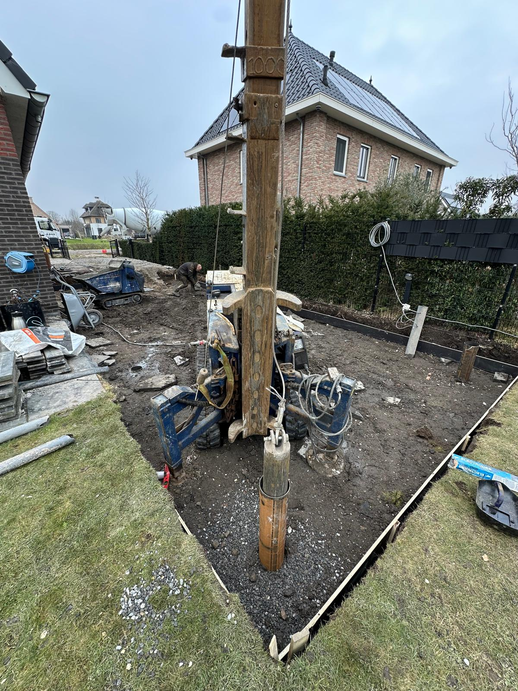
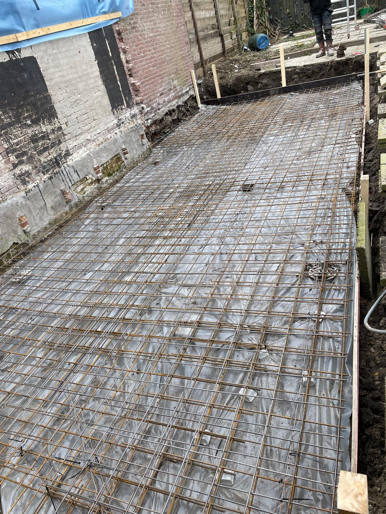
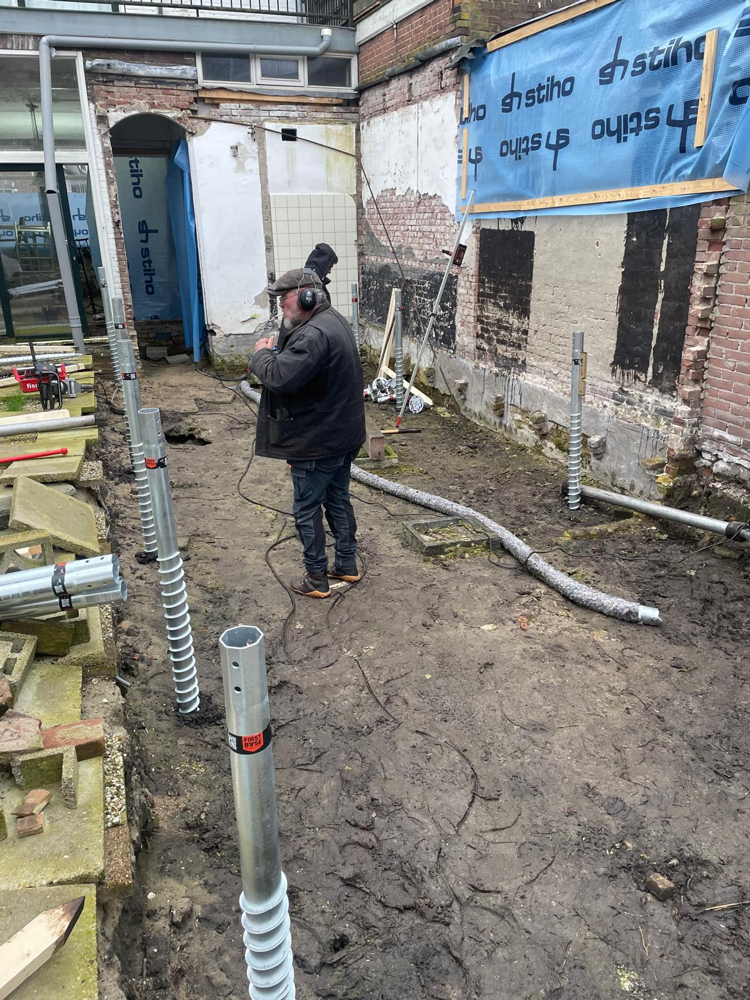
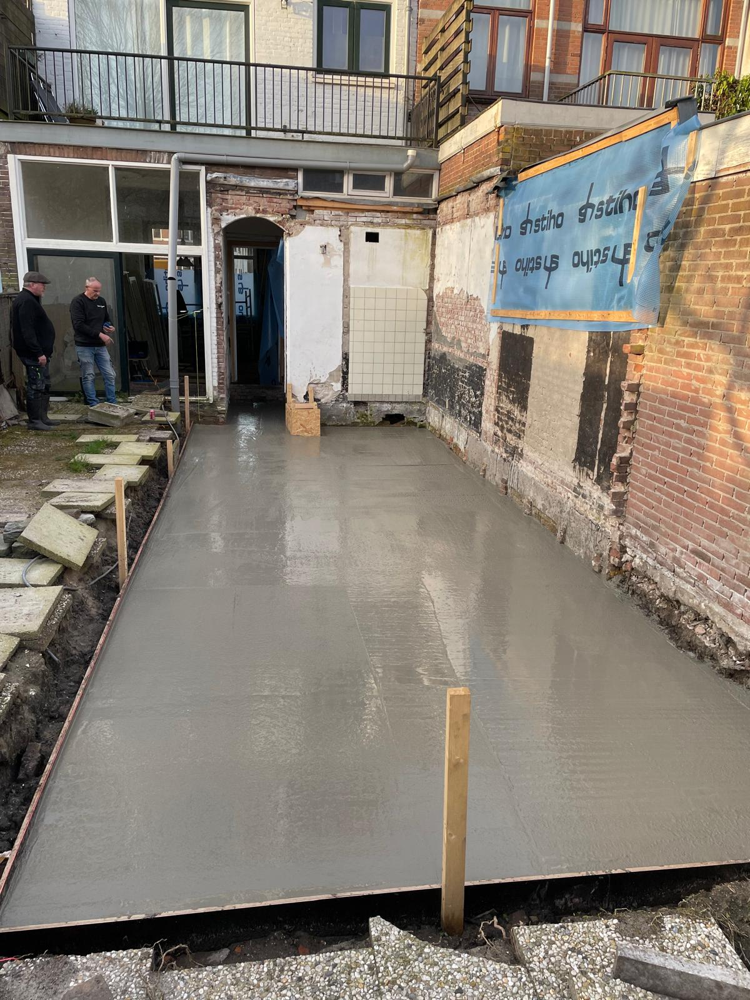
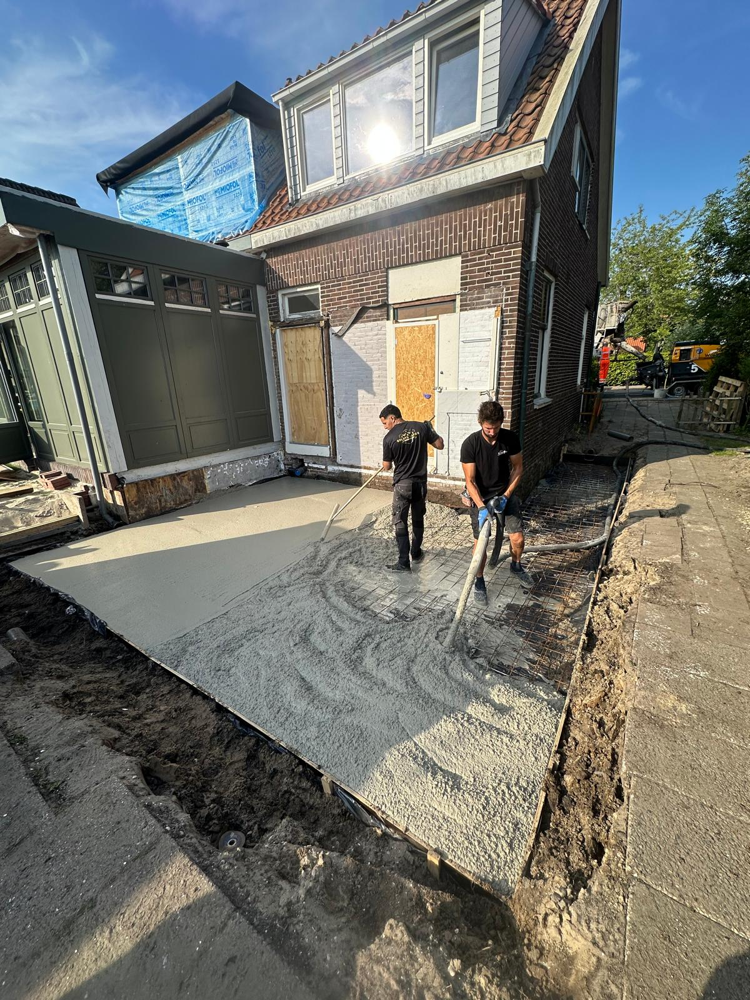
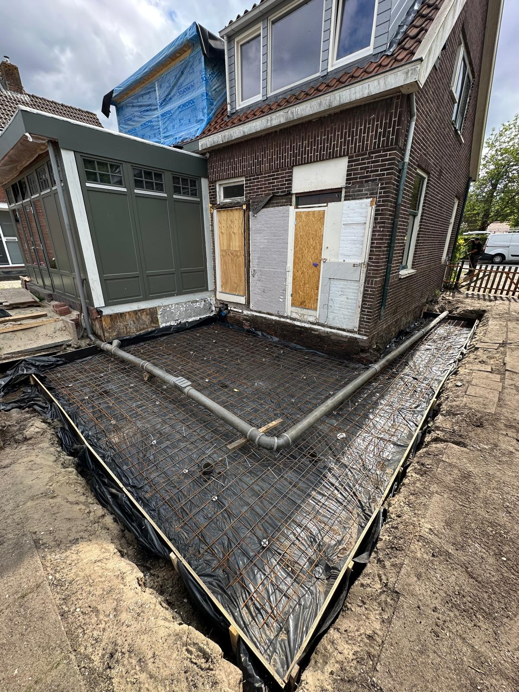
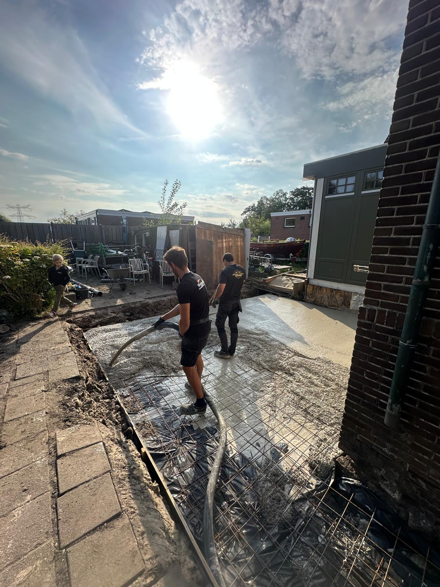

De basis van elk gebouw moet onwrikbaar zijn. Wij bieden gespecialiseerd funderingsherstel en aanleg voor een solide toekomst.
Verzakkingen, scheuren in muren en klemende deuren zijn vaak indicaties van funderingsproblemen. Met moderne technieken en diepgaande expertise pakken wij het probleem bij de wortel aan.
Solide werk in de praktijk






